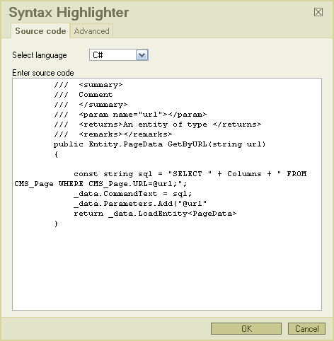
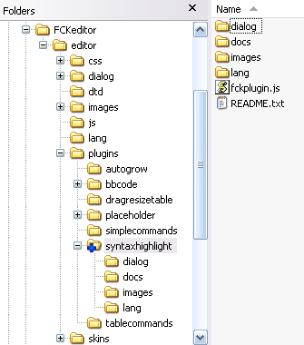

This is a dialog-based plugin to handle formatting of source code for FCKeditor. It makes use of the SyntaxHighlighter javascript library available to download from Google Code. The plugin primiarily edits a <pre> tag with some custom attributes. Its mainly aimed at users editing blogs or content management systems where there is a requirement to format programming languages on a website that is being edited using FCKEditor.
The plugin is in the form of a tabbed dialogue box that looks like this:

Occasionally the dialogue box does not pickup the <pre> element to be edited in Firefox.
Extract the contents of the zip in you plugins directory, so it ends up like
this

Now add in your fckconfig.js or custom js configuration
file the following line:
FCKConfig.Plugins.Add( 'syntaxhighlight', 'en') ;
Add the button 'SyntaxHighLight' to your toolbarset:
FCKConfig.ToolbarSets["Basic"] = [
['Bold','Italic','-','OrderedList','UnorderedList','-','Link','Unlink',
'-','SyntaxHighLight','-','About']
] ;
The plugin will work 'out of the box', but you can configure a default language using the SyntaxHighlightLangDefault parameter:
FCKConfig.SyntaxHighlightLangDefault = 'csharp'
;
The full list of languages and corresponding codes are:
In FCKEditor <pre> blocks aren't really formatted by default. I suggest editing your fck_editorarea.css (or equivalant if you are using a custom CSS file) to something that highlights code blocks better. eg:
pre
{
background-color: #fff;
font-family: "Consolas" , "Courier New" ,Courier,mono,serif;
font-size: 12px;
color: blue;
padding: 5px;
border: 1px dashed blue;
}
You must have SyntaxHighlighter installed and working to display properly formatted code. FCKEditor does not need it, but for code to be properly formatted on your website you must have it configurated correctly. The project wiki here is a good resouce, or this blog post might also be useful.
Now empty the cache of your browser and reload the editor, the new button should be ready to use.
There's some additional functionality I might add at a later date: